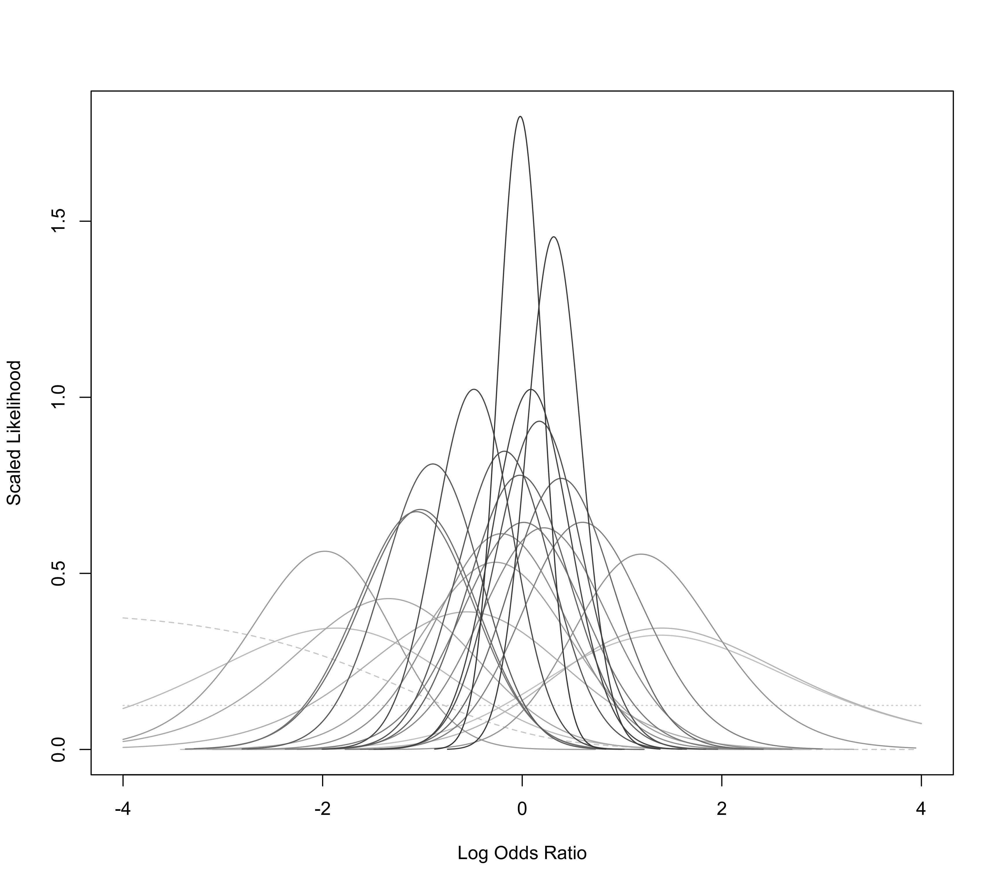

dat.collins1985a.RdResults from studies examining the effectiveness of histamine H2 antagonists (cimetidine or ranitidine) in treating patients with acute upper gastrointestinal hemorrhage.
dat.collins1985aThe data frame contains the following columns:
| id | numeric | study number |
| trial | character | first author of trial |
| year | numeric | year of publication |
| ref | numeric | reference number |
| trt | character | C = cimetidine, R = ranitidine |
| ctrl | character | P = placebo, AA = antacids, UT = usual treatment |
| nti | numeric | number of patients in treatment group |
| b.xti | numeric | number of patients in treatment group with persistent or recurrent bleedings |
| o.xti | numeric | number of patients in treatment group in need of operation |
| d.xti | numeric | number of patients in treatment group that died |
| nci | numeric | number of patients in control group |
| b.xci | numeric | number of patients in control group with persistent or recurrent bleedings |
| o.xci | numeric | number of patients in control group in need of operation |
| d.xci | numeric | number of patients in control group that died |
The data were obtained from Tables 1 and 2 in Collins and Langman (1985). The authors used Peto's (one-step) method for meta-analyzing the 27 trials. This approach is implemented in the rma.peto function. Using the same dataset, van Houwelingen, Zwinderman, and Stijnen (1993) describe some alternative approaches for analyzing these data, including fixed- and random-effects conditional logistic models. Those are implemented in the rma.glmm function.
Collins, R., & Langman, M. (1985). Treatment with histamine H2 antagonists in acute upper gastrointestinal hemorrhage. New England Journal of Medicine, 313(11), 660–666. https://doi.org/10.1056/NEJM198509123131104
van Houwelingen, H. C., Zwinderman, K. H., & Stijnen, T. (1993). A bivariate approach to meta-analysis. Statistics in Medicine, 12(24), 2273–2284. https://doi.org/10.1002/sim.4780122405
medicine, odds ratios, Peto's method, generalized linear models
### copy data into 'dat' and examine data
dat <- dat.collins1985a
dat
#> id trial year ref trt ctrl nti b.xti o.xti d.xti nci b.xci o.xci d.xci
#> 1 1 Hoare 1979 3 C P 50 8 5 1 50 16 12 1
#> 2 2 La Brooy 1979 4 C P 56 11 6 1 53 12 7 0
#> 3 3 Macklon 1979 5 C P 18 5 NA NA 12 1 NA NA
#> 4 4 Nair 1979 6 C AA 14 2 2 0 15 6 3 4
#> 5 5 Pickard 1979 7 C P 33 12 NA NA 36 10 NA NA
#> 6 6 Siddiqi 1979 8 C UT 58 NA 8 4 55 NA 8 5
#> 7 7 Carstensen 1980 9 C P 40 9 15 4 48 11 16 5
#> 8 8 Foco 1980 10 C P 20 7 2 0 20 8 3 2
#> 9 9 Galmiche 1980 11 C P 46 5 5 2 47 12 6 5
#> 10 10 Gilsanz 1980 12 C P 18 0 NA 0 19 3 NA 1
#> 11 11 Meredith 1980 13 C P 45 9 6 1 43 3 1 0
#> 12 12 Teres 1980 14 C P 21 10 0 6 19 8 0 4
#> 13 13 Zuckerman 1984 15 C P 153 44 NA 10 132 30 NA 4
#> 14 14 Colecchia 1981 16 C UT 14 0 2 1 14 0 5 0
#> 15 15 Arvanitakis 1982 17 C AA 10 1 NA NA 9 4 NA NA
#> 16 16 Hostein 1982 18 C AA 24 4 2 3 24 5 3 1
#> 17 17 Dawson 1982 19 R P 78 14 11 5 80 21 15 4
#> 18 18 Nowak 1984 20 R AA 75 NA 5 1 75 NA 17 4
#> 19 19 Barer 1983 21 C P 259 50 34 20 260 51 38 35
#> 20 20 Brown 1983 NA C P 10 3 2 1 11 1 0 0
#> 21 21 Stiel 1984 22 C P 31 6 4 0 29 12 5 0
#> 22 22 Carr-Locke 1984 23 C P 51 16 7 0 54 15 6 2
#> 23 23 Birnie 1984 24 C P 106 16 2 4 107 15 7 4
#> 24 24 Darle 1984 25 C P 33 6 6 1 39 7 7 5
#> 25 25 Karlstrom 1981 26 C UT 36 11 10 3 26 5 3 2
#> 26 26 Londong 1982 27 C P 34 3 3 1 31 13 8 7
#> 27 27 Foco 1984 28 R P 15 2 0 0 14 3 0 0
# \dontrun{
### load metafor package
library(metafor)
### meta-analysis of log ORs using Peto's method (outcome: persistent or recurrent bleedings)
res <- rma.peto(ai=b.xti, n1i=nti, ci=b.xci, n2i=nci, data=dat)
#> Warning: Tables with NAs omitted from model fitting.
#> Warning: Some yi/vi values are NA.
print(res, digits=2)
#>
#> Equal-Effects Model (k = 25)
#>
#> I^2 (total heterogeneity / total variability): 39.33%
#> H^2 (total variability / sampling variability): 1.65
#>
#> Test for Heterogeneity:
#> Q(df = 23) = 37.91, p-val = 0.03
#>
#> Model Results (log scale):
#>
#> estimate se zval pval ci.lb ci.ub
#> -0.12 0.10 -1.22 0.22 -0.32 0.07
#>
#> Model Results (OR scale):
#>
#> estimate ci.lb ci.ub
#> 0.89 0.73 1.08
#>
### meta-analysis of log ORs using a conditional logistic regression model (FE model)
res <- rma.glmm(measure="OR", ai=b.xti, n1i=nti, ci=b.xci, n2i=nci, data=dat,
model="CM.EL", method="FE")
#> Warning: Studies with NAs omitted from model fitting.
#> Warning: Some yi/vi values are NA.
summary(res)
#>
#> Fixed-Effects Model (k = 24)
#> Model Type: Conditional Model with Exact Likelihood
#>
#> logLik deviance AIC BIC AICc
#> -53.6789 40.3423 109.3579 110.5359 109.5397
#>
#> Tests for Heterogeneity:
#> Wld(df = 23) = 32.5527, p-val = 0.0892
#> LRT(df = 23) = 40.3423, p-val = 0.0141
#>
#> Model Results:
#>
#> estimate se zval pval ci.lb ci.ub
#> -0.1216 0.0996 -1.2211 0.2220 -0.3167 0.0736
#>
#> ---
#> Signif. codes: 0 ‘***’ 0.001 ‘**’ 0.01 ‘*’ 0.05 ‘.’ 0.1 ‘ ’ 1
#>
predict(res, transf=exp, digits=2)
#>
#> pred ci.lb ci.ub
#> 0.89 0.73 1.08
#>
### plot the likelihoods of the odds ratios
llplot(measure="OR", ai=b.xti, n1i=nti, ci=b.xci, n2i=nci, data=dat,
lwd=1, refline=NA, xlim=c(-4,4), drop00=FALSE)
#> Warning: Studies with NAs omitted from plotting.

### meta-analysis of log odds ratios using a conditional logistic regression model (RE model)
res <- rma.glmm(measure="OR", ai=b.xti, n1i=nti, ci=b.xci, n2i=nci, data=dat,
model="CM.EL", method="ML")
#> Warning: Studies with NAs omitted from model fitting.
#> Warning: Some yi/vi values are NA.
summary(res)
#>
#> Random-Effects Model (k = 24; tau^2 estimator: ML)
#> Model Type: Conditional Model with Exact Likelihood
#>
#> logLik deviance AIC BIC AICc
#> -52.9901 38.9647 109.9802 112.3363 110.5516
#>
#> tau^2 (estimated amount of total heterogeneity): 0.1192 (SE = 0.1396)
#> tau (square root of estimated tau^2 value): 0.3453
#> I^2 (total heterogeneity / total variability): 30.86%
#> H^2 (total variability / sampling variability): 1.45
#>
#> Tests for Heterogeneity:
#> Wld(df = 23) = 32.5527, p-val = 0.0892
#> LRT(df = 23) = 40.3423, p-val = 0.0141
#>
#> Model Results:
#>
#> estimate se zval pval ci.lb ci.ub
#> -0.1744 0.1364 -1.2786 0.2010 -0.4418 0.0929
#>
#> ---
#> Signif. codes: 0 ‘***’ 0.001 ‘**’ 0.01 ‘*’ 0.05 ‘.’ 0.1 ‘ ’ 1
#>
predict(res, transf=exp, digits=2)
#>
#> pred ci.lb ci.ub pi.lb pi.ub
#> 0.84 0.64 1.10 0.41 1.74
#>
### meta-analysis of log ORs using Peto's method (outcome: need for surgery)
res <- rma.peto(ai=o.xti, n1i=nti, ci=o.xci, n2i=nci, data=dat)
#> Warning: Tables with NAs omitted from model fitting.
#> Warning: Some yi/vi values are NA.
print(res, digits=2)
#>
#> Equal-Effects Model (k = 22)
#>
#> I^2 (total heterogeneity / total variability): 25.38%
#> H^2 (total variability / sampling variability): 1.34
#>
#> Test for Heterogeneity:
#> Q(df = 19) = 25.46, p-val = 0.15
#>
#> Model Results (log scale):
#>
#> estimate se zval pval ci.lb ci.ub
#> -0.25 0.12 -1.97 0.05 -0.49 -0.00
#>
#> Model Results (OR scale):
#>
#> estimate ci.lb ci.ub
#> 0.78 0.61 1.00
#>
### meta-analysis of log ORs using Peto's method (outcome: death)
res <- rma.peto(ai=d.xti, n1i=nti, ci=d.xci, n2i=nci, data=dat)
#> Warning: Tables with NAs omitted from model fitting.
#> Warning: Some yi/vi values are NA.
print(res, digits=2)
#>
#> Equal-Effects Model (k = 24)
#>
#> I^2 (total heterogeneity / total variability): 23.17%
#> H^2 (total variability / sampling variability): 1.30
#>
#> Test for Heterogeneity:
#> Q(df = 21) = 27.33, p-val = 0.16
#>
#> Model Results (log scale):
#>
#> estimate se zval pval ci.lb ci.ub
#> -0.36 0.16 -2.21 0.03 -0.68 -0.04
#>
#> Model Results (OR scale):
#>
#> estimate ci.lb ci.ub
#> 0.70 0.51 0.96
#>
# }